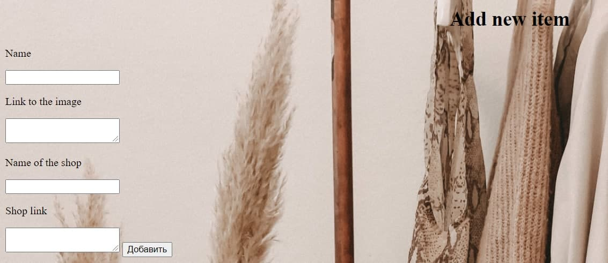
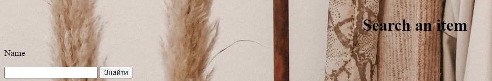
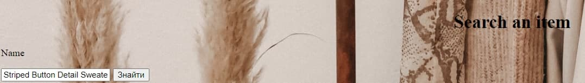
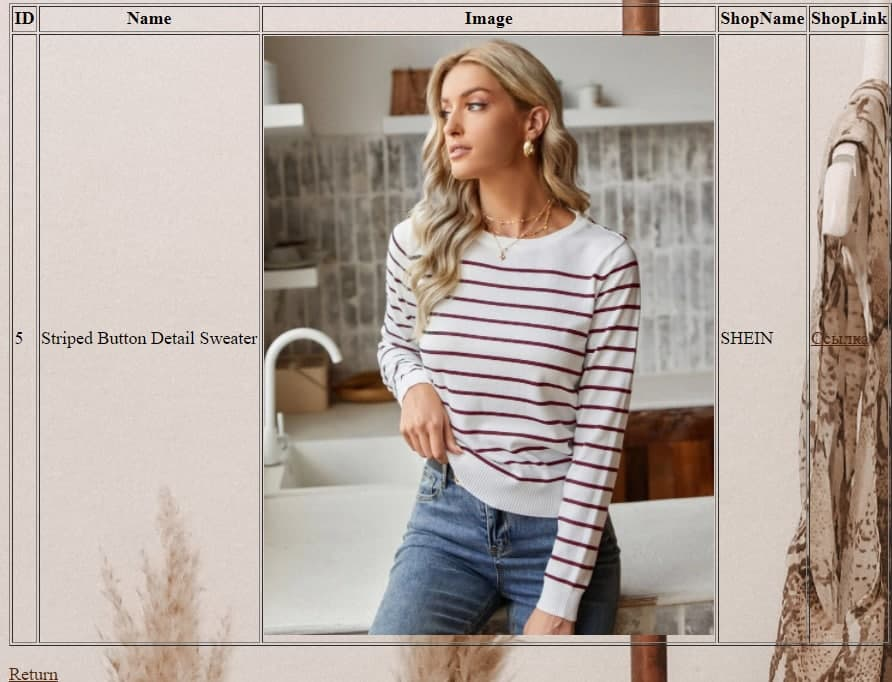

ЗВІТИ З ЛАБОРАТОРНИХ РОБІТ
З ДИСЦИПЛІНИ "РОЗРОБЛЕННЯ WEB-ЗАСТОСУВАНЬ"
БРИГАДА №3 Студенти групи ІС-01
Дудукчян Каріна, Возняк Софія, Сперкач Анна, Міхненко Анна
|
|
|
|
|


| Лабораторна робота №1 | Лабораторна робота №2 | Лабораторна робота №3 | Лабораторна робота №4 | Лабораторна робота №5 | Лабораторна робота №6 | Лабораторна робота №7 | Лабораторна робота №8 | Лабораторна робота №9 |
| Лабораторна робота №8 | |
|---|---|
|
Тема, Мета Лабораторної роботи №8 Посилання на Github Опис об'єктів предметної галузі, які будуть в БД Реалізація БД в phpMyAdmin Виведення, введення, вилучення даних в БД. Пошук даних. Авторизація. Сесія. Іконки для вибору мови. Кукі. ВИСНОВКИ |
Операції з даними в БД Виведення та можливість видалити дані: Введення даних:  Пошук даних (детально):    |